Refeições, bebidas e doces
16 produtos de exemplo. Fotos da internet e preços ilustrativos; nenhum cadastro foi alterado.
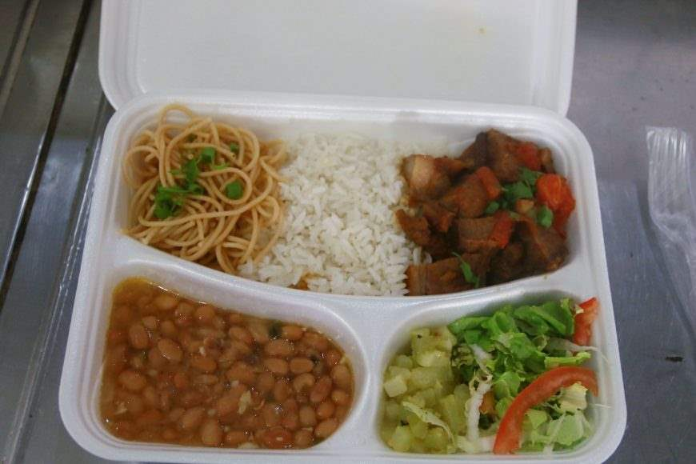
RefeiçõesMarmita por unidade
R$ 22,00UN
Fonte da fotoRefeiçõesMarmita por quilo
R$ 54,90 / kgKG
Fonte da foto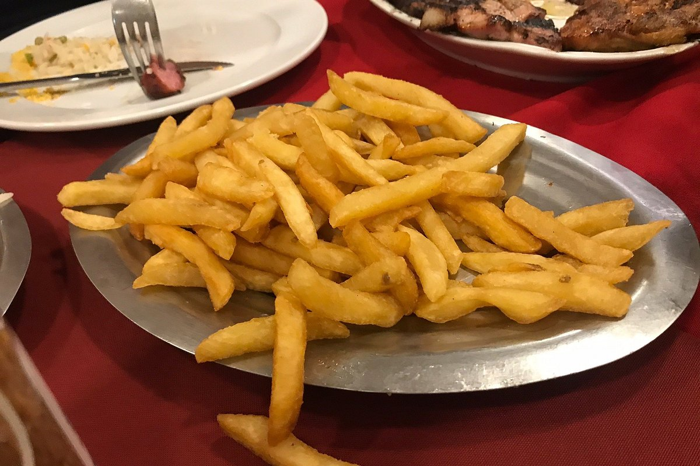
PorçõesBatata frita — porção
R$ 18,00UN
Fonte da foto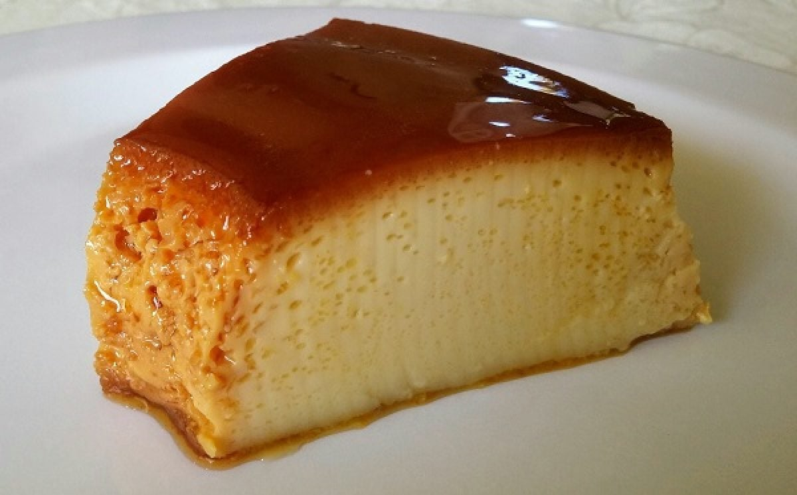
DocesPudim — fatia
R$ 8,00UN
Fonte da foto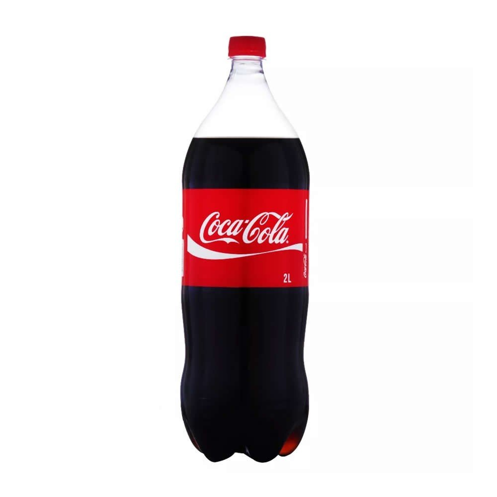
BebidasCoca-Cola 2 L
R$ 14,00UN
Fonte da foto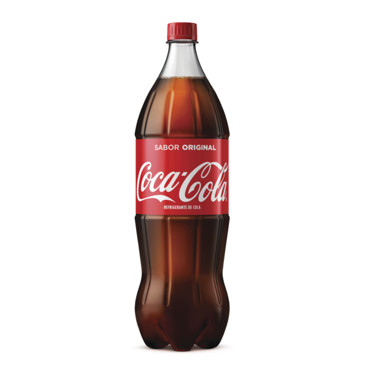
BebidasCoca-Cola 1,5 L
R$ 11,00UN
Fonte da foto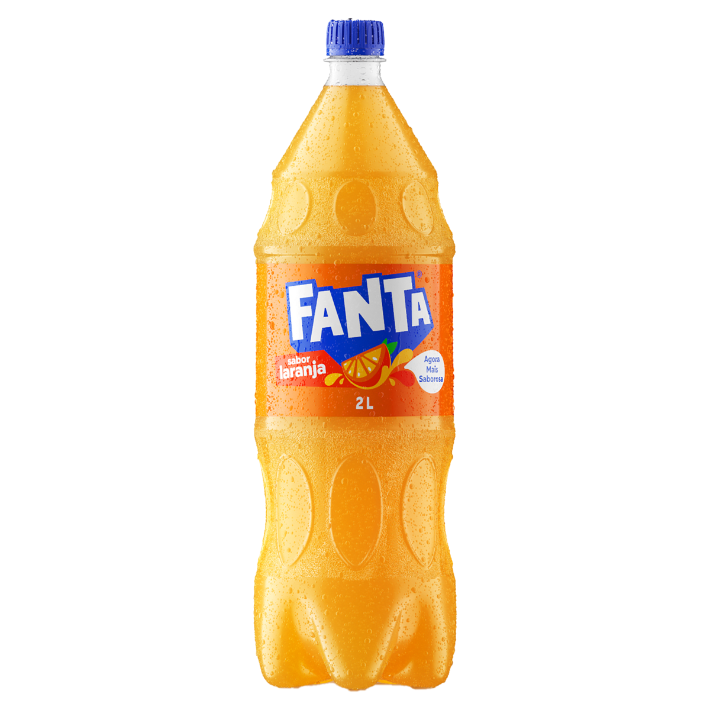
BebidasFanta Laranja 2 L
R$ 12,00UN
Fonte da foto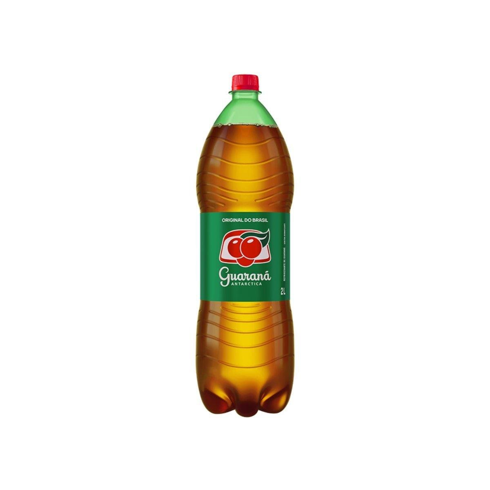
BebidasGuaraná Antarctica 2 L
R$ 12,00UN
Fonte da foto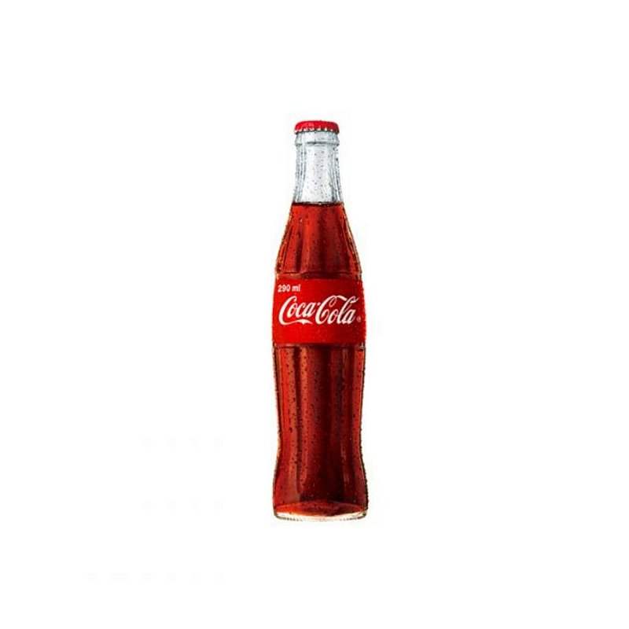
BebidasCoca-Cola KS 290 ml
R$ 5,00UN
Fonte da foto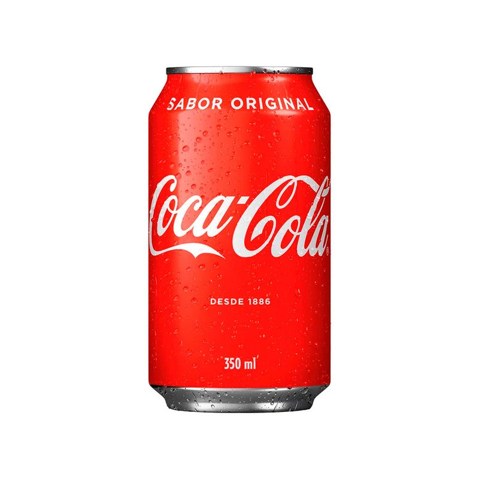
BebidasCoca-Cola lata 350 ml
R$ 6,00UN
Fonte da foto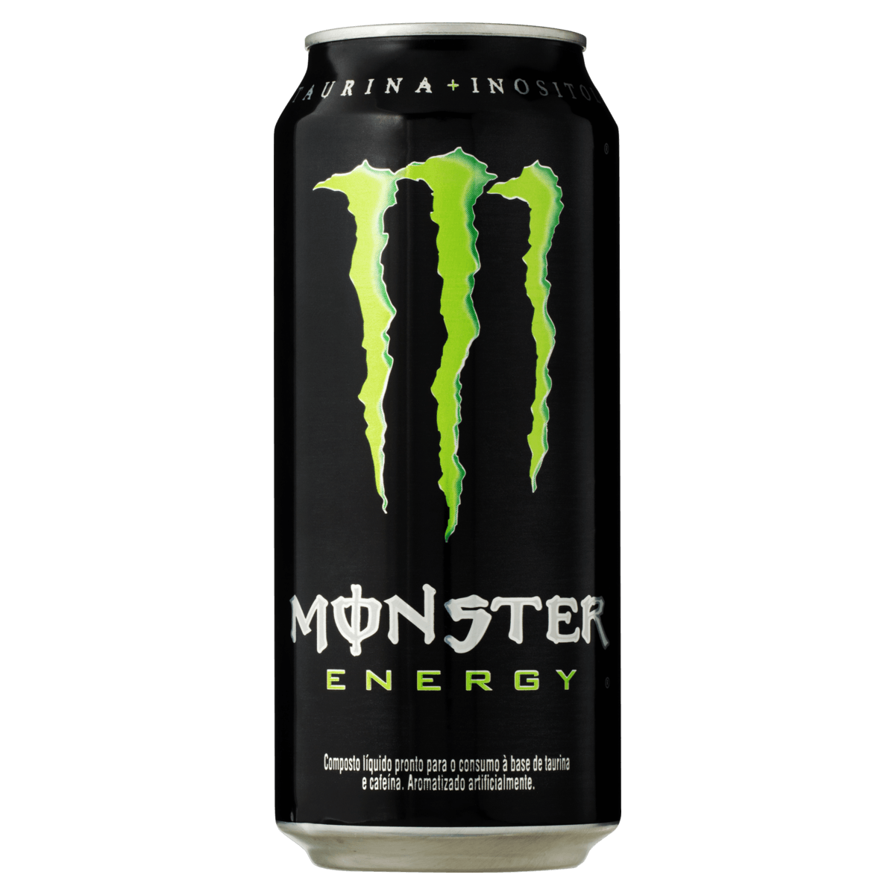
BebidasMonster Original 473 ml
R$ 14,00UN
Fonte da foto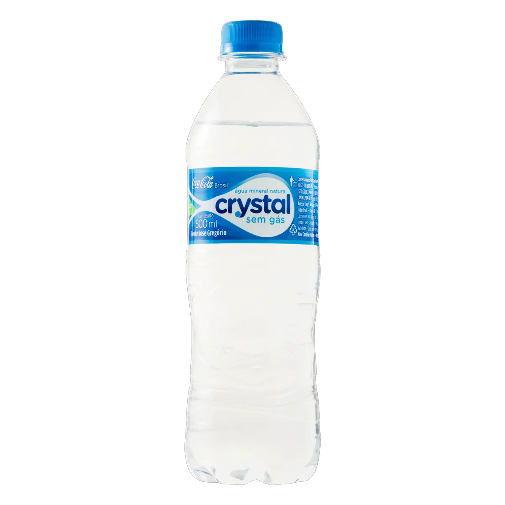
BebidasÁgua sem gás 500 ml
R$ 4,00UN
Fonte da foto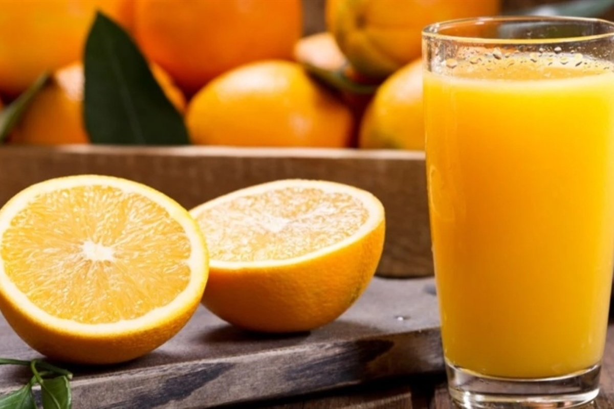
BebidasSuco de laranja na hora 300 ml
R$ 8,00UN
Fonte da fotoBebidasSuco de laranja na hora 500 ml
R$ 12,00UN
Fonte da foto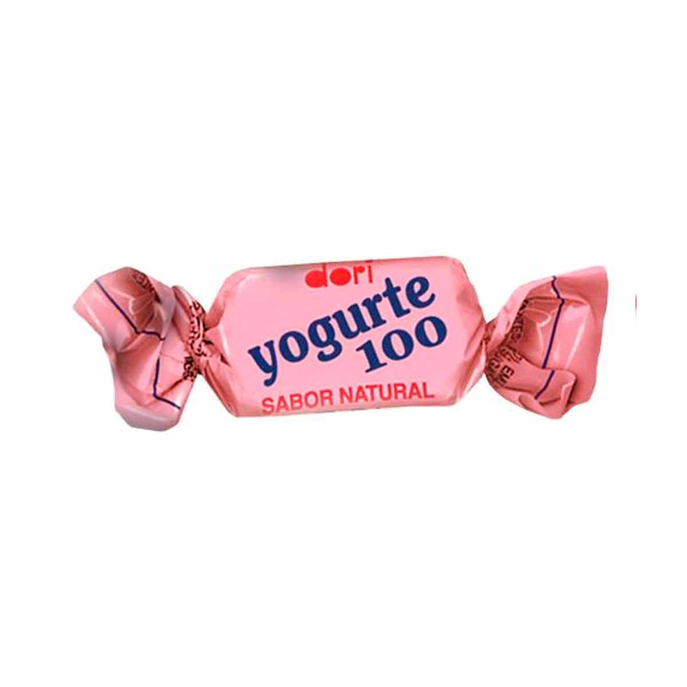
DocesBalinha de iogurte — unidade
R$ 0,50UN
Fonte da foto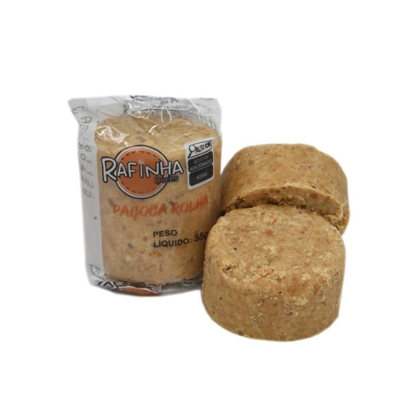
DocesPaçoca rolha — pacote 55 g
R$ 3,00UN
Fonte da foto